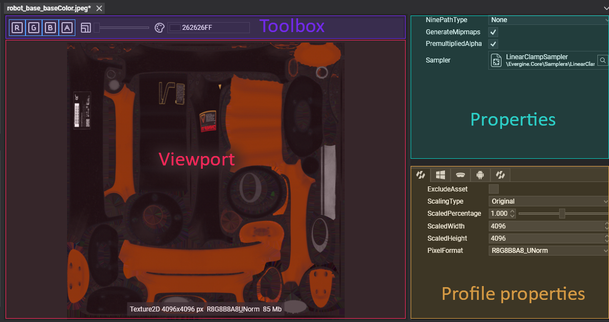
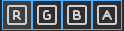
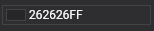

Texture Editor

Texture Editor allows the editing of texture assets. Double click over a Texture asset shown in Assets Details will open this editor. The editor is composed of 3 main parts:
Viewport
Shows the Texture with the current configuration. It contains a label with the following information:
- TextureType
- Resolution in pixels
- Pixel Format.
- Size of the texture on disc.
Note
An example of descriptive text would be Texture2D 4096x4096 px R8G8B8A8_Unorm.-
Toolbox
Helps with the texture visualization. Has the following options:
| Item | Description |
|---|---|
|  | Each button enables or disables the Texture channels. |
 |
Slider that sets the current Mipmap level of the texture. This control will be hidden in case of textures without mipmapping |
|  | Sets the background color on the Viewport. |
Properties
Panel with all the Texture properties. They don't depend on the profile.
| Property | Description |
|---|---|
| GenerateMipmaps | If Evergine will generate all the mipmaps for the Texture. |
| PremultipliedAlpha | If the RGB channels are multiplied by the Alpha (A) channel. |
| Sampler | The SamplerState asset that will defines how the Texture is sampled and filtered. |
| NinePathType | (Currently not supported ) Sets the ninepath information of the image. It defines how the texture can stretch un a ui component. |
Profile Properties
Properties that can be changed in every app profile.
| Property | Description |
|---|---|
| ScalingType | Sets how the texture will be scaled:
|
| ScaledPercentage | Defines the scale factor of the texture when using Percentage scaling type. 1.0 by default. |
| ScaledWidth | Defines the width of Texture when using Freeform scaling type. |
| ScaledHeight | Defines the height of Texture when using Freeform scaling type. |
| PixelFormat | Defines the size, elements and name of Texture pixels. |